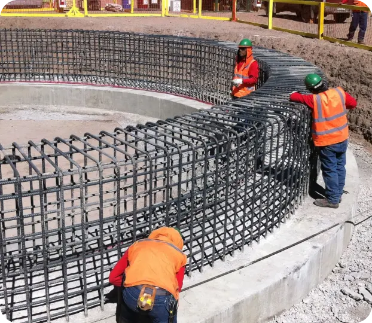

At MONTEC S.A., we develop infrastructure projects in key sectors that drive the country's growth. We have over 30 years of experience executing sanitary, mining, public, and real estate works, delivering efficient and sustainable solutions with the highest standards of quality and safety.
Building the future with innovation and experience

